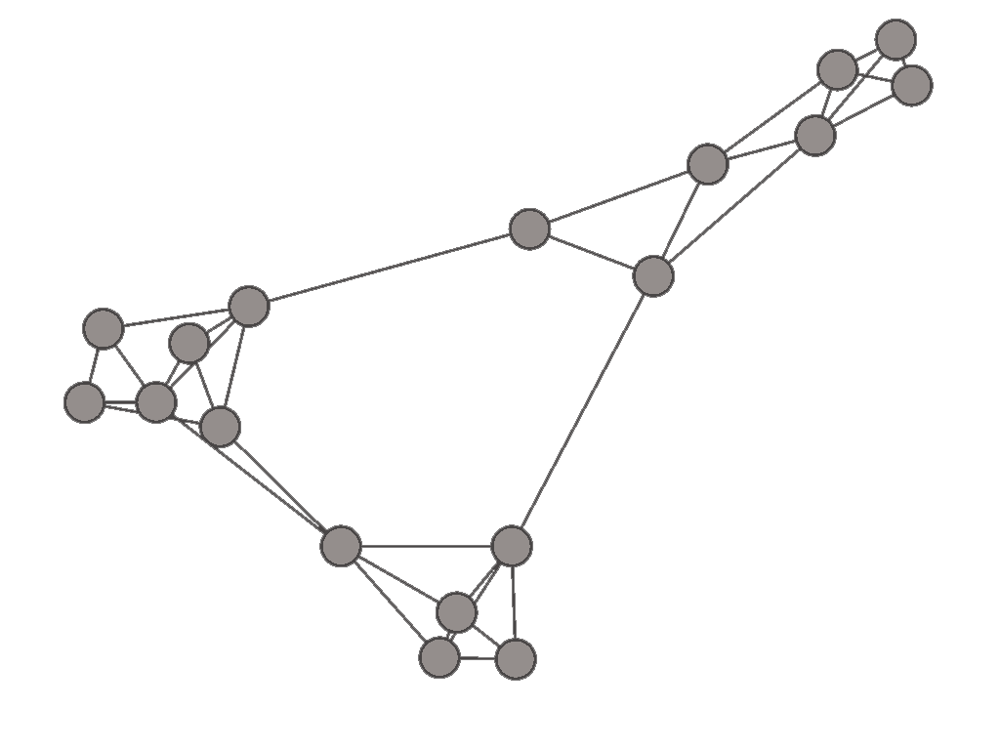
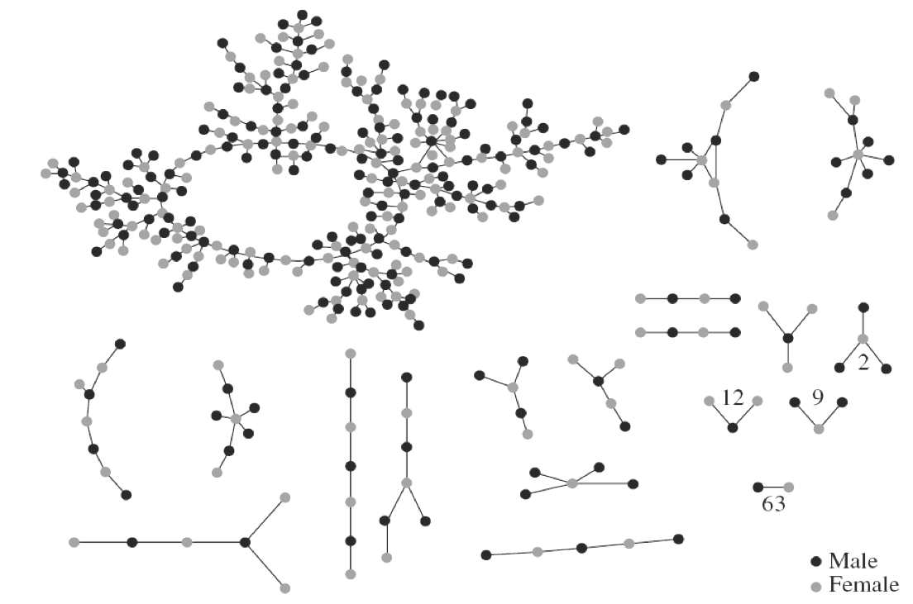
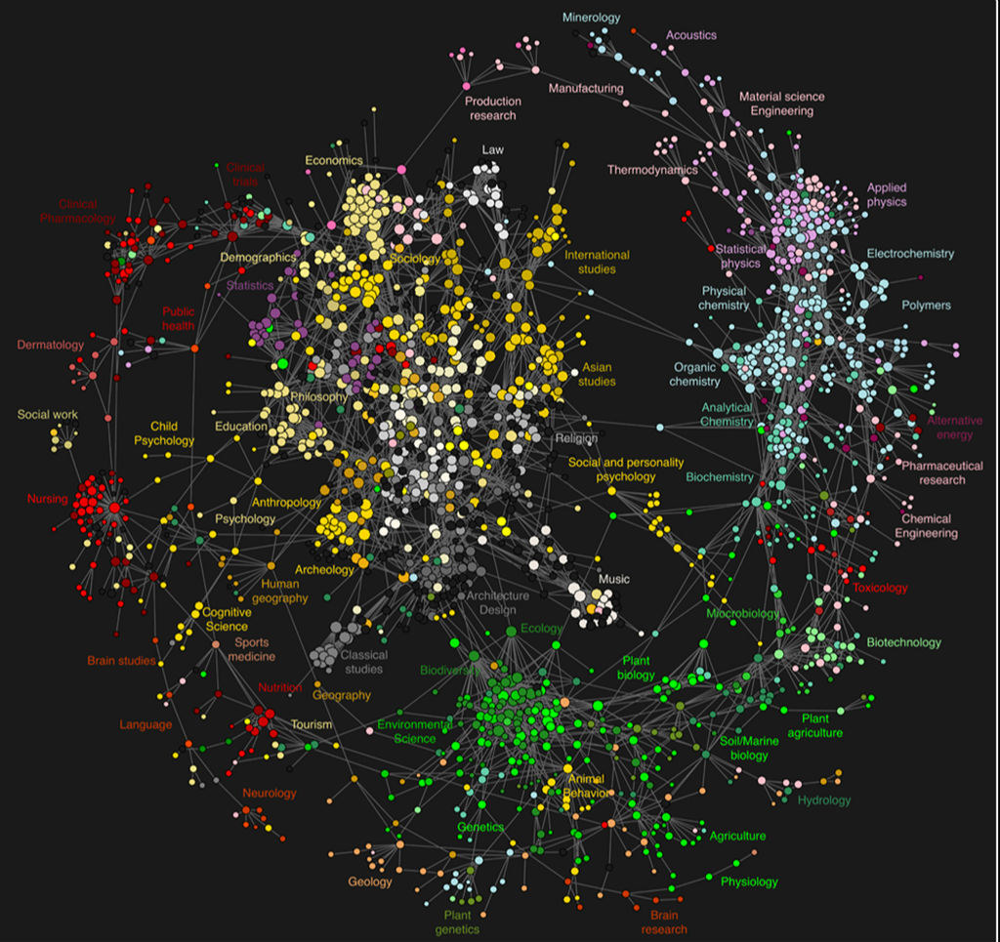

Network Science

今天我来试着理解一下“网络图”。上面这张图是我画的一种网络关系图，可以是某群体内相互间的朋友关系，也可以是不同公司间的合作关系。
数据来源为: Social and Economic Networks: Models and Analysis, Matthew O. Jackson
用到的软件为：Gephi（免费软件，支持OS X和Windows）下载：https://gephi.org/
网络图制作起来并不容易，但有助于理解隐藏在现象背后的规律，特别是涉及到多个调查对象相互关系的规律。加上现在数据丰富程度逐渐增加，关于社交网络数据的挖掘成了社会科学领域不可忽视的一股潮流。在Matthew O. Jackson的课上，他给出了一张特别有意思的关于“关系”的图：

这张图是三位学者调查了一个学校的同学间“关系”（原文叫High School Romance）得到的一张图表。黑点代表男性，灰点代表女性，亮点很多，大家可以自行寻找：）
网络科学的研究除了社会网络还有非常广阔的应用领域，C.A. Hidalgo等人在Science上写了一篇文章The Product Space Conditions Development of Nations, 讲了一个关于国家产业网络的很有意思的故事，推荐感兴趣的人读读原文。 文章的图画得很精彩，我贴到下面：

作者在摘要里写道：
Economies grow by upgrading the type of products they produce and export. The technology, capital, institutions and skills needed to make such new products are more easily adapted from some products than others. We study the network of relatedness between products, or ‘product space’, finding that most upscale products are located in a densely connected core while lower income products occupy a less connected periphery. We show that countries tend to move to goods close to those they are currently specialized in, allowing nations located in more connected parts of the product space to upgrade their exports basket more quickly. Most countries can reach the core only if they “jump” over empirically infrequent distances in the product space. This may help explain why poor countries have trouble developing more competitive exports, failing to converge to the income levels of rich countries.
上图描述了产业网络。网络里面的节点代表不同产业，网络中心是深加工产品（most upscale products），网络边缘是原材料等。图有如下几个特征：
- 1）网络密集的地方连接也密集（网络中部），而网络稀疏的地方连接也少，网络边缘的连接非常少，比如说fishing&animal agriculture。
- 2）每个产业间的连接刻划两种产品在生产过程中的联系，外围产品是中心产品的原材料，中心产品也可以给外围提供服务。
- 3）连线的颜色对应两种产品的“相似度”。（生产它们时候需要的生产要素的相似性，如劳动，技术，资本等）。
- 4）同类型的产业被画成一种颜色。
- 5）节点的大小代表年交易量。（3-5点的见右上角图例说明）
关于PHD
之前有幅很经典的图是说PHD相当于在知识的圆圈边缘搞一个小“突起”（创新），这张网络图也可以用来解释一下PHD这种生物的活动。不管抱的什么样的目标，可以说读PHD缩小了职业选择空间（就知识学习而言走到了网络边缘）。 如果你不是特别喜欢做研究，PHD的价值就要体现在三五年时间对一个人（非专业知识）的塑造，比如体系化写作的能力，归纳、演绎、分类、整理的能力，甚至还有耐得住寂寞的能力：）
PHD这种生物在进行一项叫科学研究的工作，而科学研究本身也是一个网络结构(下面一张图是学者总结的目前学术研究的网络)。PHD们每个人都从自己的学科背景在网络中的探索。中心节点互相联通，因为解决它们所需要的基本要素是相通的。而且很多时候一些学科看似很难的突破，在别的领域已经是成熟的研究方法，像城市研究中对经济、对社会学、人类学的关注在各自相关领域都相对成熟。但科研人员往往有捍卫领地的趋势，想在不同节点游走并不容易。

Johan Bollen等，Clickstream Data Yields High-Resolution Maps of Science
这次小博客的重点不在于解读这些图，主要想展示网络结构图的魅力和可以应用的领域，同时感兴趣的可以试试Gephi软件及Cousera上Matthew O. Jackson教授开的课程：Social and Economic Networks: Models and Analysis